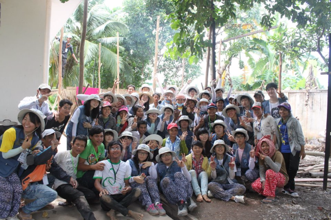

과거
제가 이제까지 살면서
가장 영향을 많이 받은 사건인
해외봉사 사진입니다.
그들과 다르게 그들이 하고 싶어하는 공부를
마음껏 할수 있다는 것에 대해서
너무 큰 감사함과 고마움을 느끼게 되었고
봉사라는 것에 대해서 진지하게 생각해 볼 수 있는 계기가 되었습니다.

현재
현재는 컴퓨터 공학도로서 할 수 있는 건 다 해보려고 노력 중입니다.
지금 하고 싶은것은 보안 쪽이지만 여러가지 분야를 배우다 보면
더 저한테 맞는 직업을 만날 수 도 있고
그게 아니더라도 제가 보안 공부를 하는데 다 피가되고 살이 될 거라 생각하고 열심히 공부하고 있습니다.

미래
저는 미래의 사이버 수사관이 되어서
점점더 복잡해지는 인터넷 속에서 피해자가 발생하지 않도록
도우는 일을 하는게 현재의 목표 입니다.